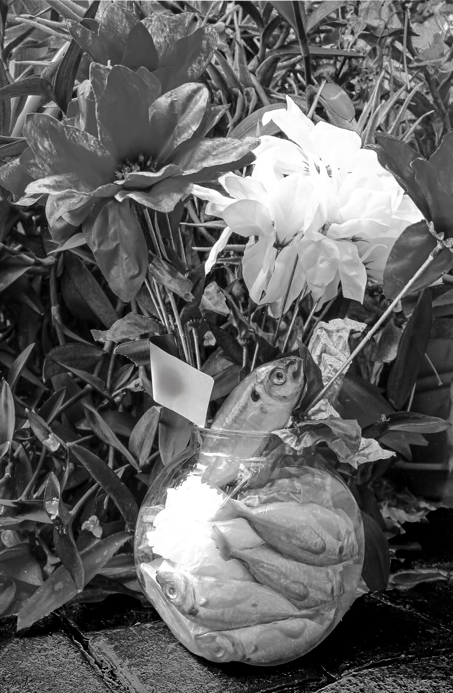
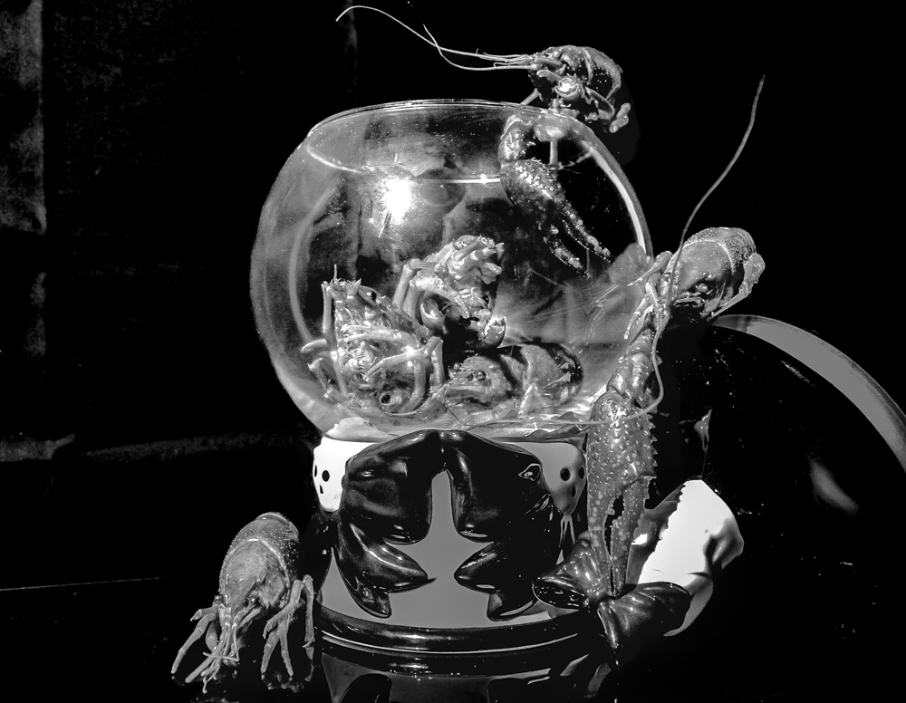

Photography
A short series focusing on a broader issue regarding seafood.



About This Series
Inspired by Michiko Kon, she has highlighted an issue regarding how seafood has always been toyed with when deceased and displayed inhumanely that we as humans simply ignore because we digest it. I was inspired to work on this project to learn to understand her point of view and how exactly can my perspective change from this understanding.